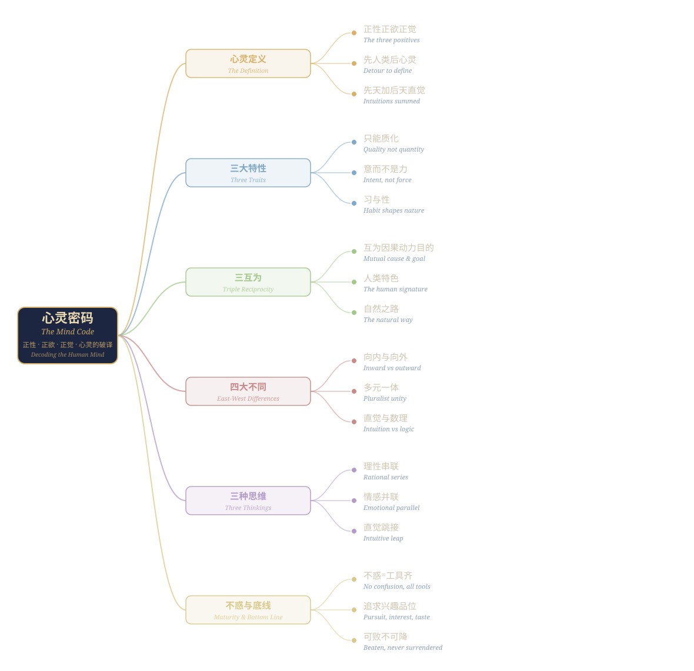

心灵密码
〇 · 书籍信息
基本信息
| 书名 | 《心灵密码》——扉页即全书定义：「如果说人性含有善恶，那心灵就是祛恶存善的人性——正性；如果说人类有许多欲望，那心灵就是祛邪存正的欲望——正欲」——正性、正欲、正觉，就是心灵 |
|---|---|
| 方法 | 前言立下解题路线：「要想解开心灵这个密码，直接从『心灵』二字下手怕是不成，我们必须学会迂回，先弄明白『人类』是什么，再从中寻找『心灵』的真相与定义」——从人类学到文化比较，再回到心灵 |
| 结构 | 五章：中国人能为世界贡献什么 → 心灵到底是什么 → 心灵的位置 → 「三十而立」立的是什么 → 如何做到「四十而不惑」——前三章破译心灵，后两章给哲学与人生开出处方 |
| 靶子 | 第二章先清场：「心灵鸡汤的一汤的汤的汤」——市面上鸡汤书的通病：把心灵定义成「忍耐＋为他人着想＋争取幸福＋……N」的小零碎相加——「如同砂子再多也只能是沙漠而不是石头和高山」 |
| 一句话 | 心灵是人性、欲望、感觉经过文化文明改造后的正性、正欲、正觉——它只能「质化」不能「量化」，是「意」而不是「力」；而「不惑」的秘诀，是同时掌握理性、情感、直觉三种思维方式。 |
一 · 核心主题总览
这本心灵学里的四组母题：① 三互为的发展
全书的地基概念：「人类、文化文明、环境三者，是以『互为因果、互为动力、互为目的』（三互为）的方式发展着的」——由此推出人类的路：「坚持特色、尊重自然，如此发展，人类就越来越像人了」——「人类特色」指文化文明（区别于达尔文主义的丛林规则），「自然之路」指地球的自然属性不容「人定胜天」式的强改——个性与共性各守一半，发展才永无止境。
② 东西方四大不同
第一章的比较文化学被总结成清单：东方的价值取向——「向内，去把握自身」；西方——「向外，去把握客观事物」；东方哲学体系是「多元一体（天人合一）」，西方是「二元辩证（对立统一）」；东方思维是「合情合理的艺术思维与纯经验的直觉思维」，西方是「数理逻辑的纯理性思维」；东方管理是「等级制、宗法制加面子」，西方是「契约加法律」——四大不同互为表里，无优劣、有互补。
③ 心灵的三大特性
第二章给出心灵的户口：第一大特性「非理性」——「心灵只能『质化』不能『量化』」，要学会用质化的眼睛看人文；第二大特性「意向性」——「心灵是『意』而不是『力』」；第三大特性「习与性」——善恶两种天性的较量沉淀为习惯与习性——定义随之完成：「人类的本质是心灵，心灵是人性、欲望、感觉经过文化文明改造后的正性、正欲、正觉的简称」。
④ 三十而立与四十不惑
孔子的话被重新破译：「三十而立」立的是「多元论」——「天、地、人」三元再加上「背景」一元的「四合一」多元论（天人合一的正解）；「四十而不惑」的「惑」被定义为「思维方式不全面」——「懂得思维有不同的方式，并能熟练地运用这些方式，此为『不惑』之正解」：理性（串联·因果）、情感（并联·由此及彼）、直觉（跳接·相似替代）三种思维各有律法则，配齐了才算不惑。
二 · 第一段 心灵的破译 —— 从鸡汤到定义—— 一汤的汤 · 意不是力 ——
鸡汤的水饱与悖论
第二章先扫雷：「任何一本关于『心灵之汤』的书，初看起来都令人眼前一亮、心底里充满温馨畅快……但随着一篇一篇地看下去……好心灵没培养出来，我们反而成了麻木与糊涂的『老总』了」——病根在定义方式：「你想成功，就要学会忍耐；你想搞好人际关系，就要多为他人着想……其诸项相加，等于心灵」——作者的批语：「如同砂子再多也只能是沙漠而不是石头和高山」；「这些小零碎只能算是好心灵散发出来的『气息』……但是你不能一闻到香气就肯定这里有花儿，说不准这是香水散发出来的」——气息不是花，经验不是心灵：定义必须回到结构。
◆ 语言学习 · 概念 · 鸡汤批判
| 一汤的汤的汤 | 鸡汤书的复制链：转述的转述，养分尽失 |
|---|---|
| 灌了个水饱 | 小零碎相加成不了质变——砂子堆不出高山 |
| 气息与花 | 经验是心灵的香气，不是心灵本身 |
| 回到结构 | 破译的路线：放弃清单，寻找定义 |
句型 ｜ 「如同砂子再多也只能是沙漠而不是石头和高山。」——对鸡汤书最形象的一句判词：量的堆砌永远到不了质变——心灵的密码不在名句收藏量里。
三大特性与总定义
心灵的户口本分三栏：「非理性」——心灵只能质化不能量化，用数理逻辑丈量心灵是范畴错误；「意向性」——「心灵是『意』而不是『力』」：它有指向、有意图，不是可以催动的蛮力；「习与性」——善恶两种天性的较量沉淀为习惯与习性，人的素质由此养成。最终的总定义带着全书的体温：「人类的本质是心灵，心灵是人性、欲望、感觉经过文化文明改造后的正性、正欲、正觉的简称」——而在结束语里，它还有一句更简洁的版本：「心灵是人类从进化和环境中积累下来的先天直觉与后天直觉的总和」——两个定义，一个从文化说，一个从直觉说。
◆ 语言学习 · 概念 · 心灵定义
| 非理性 | 第一大特性：只能质化，不能量化 |
|---|---|
| 意向性 | 第二大特性：心灵是「意」不是「力」 |
| 习与性 | 第三大特性：善恶较量沉淀为习惯与习性 |
| 先天+后天直觉 | 结束语的总定义：心灵＝直觉的总和 |
习语 ｜ 「心灵是『意』而不是『力』。」——对成功学最根本的纠正：心灵不能像马力一样被榨取——它有方向、有意图，对待心灵的方式不是驱动，是安放。
三 · 第二段 中国人的贡献 —— 三互为与四大不同—— 向内 · 多元一体 · 直觉 ——
人类特色的自然之路
第一章从「中国人能为世界贡献什么」切入：贡献的三个条件（利他 / 只限于文化文明 / 明确差别与动机）之后，是那条总路线：「人类、文化文明、环境三者，是以『互为因果、互为动力、互为目的』的方式发展着的」——「人类特色」强调个性：把人类文明等同达尔文主义、丛林规则、弱肉强食，那是动物文明；「自然之路」强调共性：地球的自然属性没变，也不容人为强改——「坚持特色、尊重自然，如此发展，人类就越来越像人了，人类自己也将越来越成为『自己』了」。
◆ 语言学习 · 概念 · 三互为
| 三互为 | 互为因果、互为动力、互为目的——人类文明的发展方式 |
|---|---|
| 人类特色 | 文化文明：区别于丛林规则的个性 |
| 自然之路 | 地球的自然属性不容强改：尊重共性 |
| 越来越像人 | 发展的终极尺度：人性含量的增长 |
句型 ｜ 「坚持特色、尊重自然，如此发展，人类就越来越像人了。」——发展的坐标被换掉：不是 GDP 与武力，是「越来越像人」——一个文明的成绩单，写在它对心灵与环境的取向上。
四大不同清单
东西方比较被整理成一张对照卡：「东方文明的价值取向——向内，去把握自身；其哲学体系——多元一体（天人合一）的理论体系；其思维模式——合情合理的艺术思维与纯经验的直觉思维；其管理方式——等级制、宗法制加面子。西方文明的价值取向——向外，去把握客观事物；其哲学体系——二元辩证（对立统一）的理论体系；其思维模式——数理逻辑（二元一值）的纯理性思维；其管理方式——契约加法律」。作者对「天人合一」也做了祛魅式正解：「它是一种『天、地、人』三元再加上以『背景』为一元的『四合一』的多元论，是一种哲学体系」——不是逆来顺受，是一套结构化的世界观。
◆ 语言学习 · 概念 · 四大不同
| 向内 / 向外 | 价值取向的分野：把握自身 vs 把握事物 |
|---|---|
| 多元一体 vs 二元辩证 | 哲学体系的两棵树 |
| 直觉 vs 数理 | 思维方式：合情合理 vs 逻辑一值 |
| 四合一 | 天人合一的正解：天地人三元 + 背景一元 |
习语 ｜ 「四合一地看人和事物，这就是『天人合一』的正解。」——国学热里最需要的一盆冷水：天人合一不是玄学口号，是一套把时空背景算进去的分析框架——老祖宗的智慧，拆开看是方法，合上看是境界。
四 · 第三段 四十而不惑 —— 三种思维—— 串联 · 并联 · 跳接 ——
惑与不惑的重新定义
第五章先给孔子的话松绑：「敢说『四十而不惑』，那潜台词就是人在 40 岁之前一直『惑』着……世上大多数的名著都是 40 岁之前的人写的……所以这个『惑』只能是思维方式不全面的意思，但它并不排斥思维的深入」——「不惑」的正解随之而出：「懂得思维有不同的方式，并能熟练地运用这些方式，此为『不惑』之正解也」。三种思维方式各领一套律法则：「理性思维——因果的因为所以（串联）——因此必须遵守『逻辑三律（同一律、排中律、不矛盾律）』；情感思维——情感的由此及彼（并联）——因此必须遵守『情感三法（形象法、情感法、完美法）』；直觉思维——经验的相似替代（跳接）——因此必须遵守『直觉三则（丰富经验、心理压力、敏感与勇气）』」。
◆ 语言学习 · 概念 · 三种思维
| 理性思维 | 串联 · 因果 · 逻辑三律——科学的地基 |
|---|---|
| 情感思维 | 并联 · 由此及彼 · 情感三法——艺术的地基 |
| 直觉思维 | 跳接 · 相似替代 · 直觉三则——灵感的地基 |
| 不惑 | 思维方式配齐：三套系统都能上手的成熟 |
句型 ｜ 「懂得思维有不同的方式，并能熟练地运用这些方式，此为『不惑』之正解。」——四十不惑从年龄神话变成能力清单：不惑不是没有困惑，是手里工具多了——惑的真正来源，往往是用一种思维硬啃所有问题。
教育与未来的处方
三种思维接着被用回教育与未来：第五章谈素质教育——综合教育、美育、德育、体育各归其位，「人生原本不是热闹」；谈未来的文化——「平民化意味着多元化」，中国的文化形象与媒体的成像能力被放进同一张蓝图；第四章则谈未来的人类——心灵会有什么变化、能不能给机器人造心灵、克隆能不能让人类强大——作者的立场始终守住「意」这一边：可以模拟，难成心灵。全书的小结给出四大科学的新分类：「现行的分类法是三类：自然科学、社会科学、人文科学。我们把人文科学再分为生活科学与心灵科学，从而成为四大科学」——心灵学第一次被立为单独的学科户口。
◆ 语言学习 · 概念 · 心灵科学
| 四大科学 | 自然 / 社会 / 生活 / 心灵——心灵单独立科 |
|---|---|
| 人生不是热闹 | 素质教育的定力：热闹不是成长的养料 |
| 平民化=多元化 | 未来文化的走向：品位取代身份 |
| 机器心灵之问 | 能模拟「力」，难生成「意」——心灵的红线 |
习语 ｜ 「人生原本不是热闹。」——全书最朴素的一句提醒：教育、成长、心灵，都发生在安静处——热闹是热闹的报酬，不是成长的原料。
五 · 第四段 结束语 —— 三件宝与三部曲—— 追求 · 兴趣 · 品位 ——
做人三件宝
结束语把自己放了进去：「生命三部曲：热爱生命、享受工作、快乐运动」；「做人三件宝：追求、兴趣、品位」——「有追求无兴趣，是匠人；有兴趣无追求，是庸人。你想做个成功的人，那就追求你感兴趣的东西吧」——「人的精气神、人的追求和兴趣都是有品位的。无品位的追求与兴趣，是俗人；有品位的追求与兴趣，是高尚的人。什么是高尚？那就是『可以被打败，但不可以投降』；『可夺其命，不可夺其志』」——心灵学讲到最后，落成三件可以随身携带的行李。
◆ 语言学习 · 概念 · 三件宝
| 追求 | 有希望就有追求：「活在希望里的人是永恒的」 |
|---|---|
| 兴趣 | 匠人与庸人的分界：追求 × 兴趣 |
| 品位 | 追求与兴趣的方向盘：俗与高尚的分水岭 |
| 不可投降 | 高尚的定义式：可败不可降，可夺命不可夺志 |
句型 ｜ 「可以被打败，但不可以投降；可夺其命，不可夺其志。」——心灵学的底线条款：失败属于运气与实力，投降属于心灵——前者可以重来，后者才是真正的失去。
人生的意义
全书的最后两问被极简作答：「什么是心灵？心灵是人类从进化和环境中积累下来的先天直觉与后天直觉的总和。人生的意义是什么？就是愉快而坚定地向着至善而『去……』」——配套的「人生三部曲」（《摇篮曲》《婚礼进行曲》《葬礼进行曲》）把人生三阶段对应童话诗歌、小说报告文学与哲学体系——「但对于人的一生来说，敢于用最后的有限时间去探讨无限的命题，这本身就意味着无限、不朽与永恒」。作者也给自己留了一句自省：「哲学也罢，思想也罢，原本应该是很简单的东西。哪位哲学家或是思想家把它说得复杂了，那是为了让你服从他的思维……而我也啰啰叨叨地写了那么多，同样是想让诸位能如此思维」。
◆ 语言学习 · 概念 · 人生意义
| 向着至善去 | 人生意义的方向性定义：愉快而坚定 |
|---|---|
| 人生三部曲 | 摇篮曲 · 婚礼进行曲 · 葬礼进行曲 |
| 有限探无限 | 用有限的生命追问无限：本身就是不朽 |
| 简单的东西 | 对复杂化哲学的最后一刺：复杂是服从的钩子 |
习语 ｜ 「人生的意义，就是愉快而坚定地向着至善而『去……』。」——密码的最后一位：「去」字没有终点——心灵学的答案不是抵达，是方向感：愉快管温度，坚定管速度，至善管方向。
六 · 人物图鉴与成长弧线—— 主角配角 · 一张表看穿 ——
主要人物
见君——心灵学的布道者——《大道与优游》作者七年后再出手：从解庄子到解心灵，路线未变——迂回、口语、反对把简单的东西说复杂
孔子——被重新破译的对象——「三十而立」「四十而不惑」被拆成多元论与三种思维：温故而知新的现代示范
心灵——全书真正的主角——正性正欲正觉的简称：只能质化不能量化、是意不是力、先天直觉与后天直觉的总和
庄子——暗线出场——第一章的比较文化里处处是《齐物论》的四合一多元论：心灵密码的东方基因
次要人物（功能位）
| 霍金 | 大爆炸的引用者——全书假想的读者之一：心灵学与宇宙学共用一张时间表 |
|---|---|
| 达尔文 | 被划界的对象——丛林规则与弱肉强食是「动物特色」：人类特色在文化文明 |
| 《灵商》作者 | 英国夫妇——思维方式分类的先引者：三种思维的域外来援 |
| 鸡汤书 | 集体的反面角色——「一汤的汤的汤」：小零碎相加成不了高山——全书立论的清道夫 |
七 · 主题与象征—— 每个道具都在说话 ——
| 密码 ↔ 迂回 | 书名的方法论——心灵不可直取，绕过人类与文明才回得来：答案在路上 |
|---|---|
| 砂子 ↔ 高山 | 鸡汤的判词——量的堆砌到不了质变：心灵不是名句的堆场 |
| 意 ↔ 力 | 心灵的属性——不能被榨取只能被安放：对成功学的釜底抽薪 |
| 四合一 ↔ 天人合一 | 多元论的正解——天地人三元加背景：玄学口号拆开是分析框架 |
| 串联并联跳接 ↔ 三思维 | 不惑的清单——理性情感直觉各领律法则：工具配齐才叫成熟 |
八 · 写作手法赏析—— 怎么写，就能怎么学 ——
① 迂回式结构
先人类后心灵——五章从文明比较绕回定义：拒绝速成定义，密码藏在路上
② 清单化表达
四大不同 / 三个条件 / 三种思维——把哲学写成可核对的对照卡：术语全部给出可操作的律法则
③ 口语化说理
「您说不是的么」「咱们打个比方吧」——与《大道与优游》一脉相承的聊天体：学术的门槛被降到客厅的高度
④ 靶子先行
心灵鸡汤作为清道夫——先立反面教材再给定义：定义的价值在比较中显影
⑤ 自嘲式收尾
「哪位哲学家把它说得复杂了，那是为了让你服从他的思维」——把刀也指向自己：说理者的诚实是最后一块密码
九 · 名段欣赏—— 原文精读 · 逐段赏析 ——
十 · 金句摘录—— 14 条 · 中英对照 · 带出处 ——
"如果说人性含有善恶，那心灵就是祛恶存善的人性——正性；如果说人类有许多欲望，那心灵就是祛邪存正的欲望——正欲；正性、正欲、正觉，就是心灵。"—— 扉页
"要想解开心灵这个密码，直接从「心灵」二字下手怕是不成，我们必须学会迂回，先弄明白「人类」是什么，再从中寻找「心灵」的真相与定义。"—— 前言
"人类、文化文明、环境三者，是以「互为因果、互为动力、互为目的」的方式发展着的。"—— 第1章
"坚持特色、尊重自然，如此发展，人类就越来越像人了，人类自己也将越来越成为「自己」了。"—— 第1章
"东方文明的价值取向——向内，去把握自身；西方文明的价值取向——向外，去把握客观事物。"—— 第1章
"它是一种「天、地、人」三元再加上以「背景」为一元的「四合一」的多元论，是一种哲学体系。"—— 第1章 · 论天人合一
"心灵只能「质化」不能「量化」。"—— 第2章
"心灵是「意」而不是「力」。"—— 第2章
"如同砂子再多也只能是沙漠而不是石头和高山。"—— 第2章 · 评心灵鸡汤
"人类的本质是心灵，心灵是人性、欲望、感觉经过文化文明改造后的正性、正欲、正觉的简称。"—— 第2章
"理性思维——因果的因为所以（串联）；情感思维——情感的由此及彼（并联）；直觉思维——经验的相似替代（跳接）。"—— 第5章
"懂得思维有不同的方式，并能熟练地运用这些方式，此为「不惑」之正解。"—— 第5章
"可以被打败，但不可以投降；可夺其命，不可夺其志。"—— 结束语
"心灵是人类从进化和环境中积累下来的先天直觉与后天直觉的总和。"—— 结束语
十一 · 拓展阅读—— 原文 · 词条 · 译文 ——
十二 · 个人感悟与心得—— 三点心得 ——
三点感悟
① 心灵要养结构，不囤清单
鸡汤批判的启示：收集金句与技巧是砂子堆沙丘——心灵的建设是结构性工程：先有正性正欲正觉的框架，零碎的经验才有地方安放。
② 给每个问题配对思维方式
三种思维的律法则：工作中的硬问题用理性串联，创作与表达用情感并联，人生的选择用直觉跳接——不惑不是年龄给的，是工具配齐了给的。
③ 守住「意」的方向盘
意不是力的推论：对己：成长靠安放方向，不靠自我压榨；对人：心灵只能被触动，不能被驱使——教育与管理的全部秘密，都在「意」与「力」的分野里。
这本《心灵密码》最动人的地方，是它绕了一大圈又回到了最朴素的地方：心灵是直觉的总和，人生是向着至善的「去……」——密码破译到最后，锁开的不是某个秘密，是我们本来就有、却总被热闹盖住的那个方向感。
十三 · 一页速查（复习用）
| 心灵定义 | 正性正欲正觉：人性经文化改造后的简称 |
|---|---|
| 三互为 | 人类文明环境互为因果动力目的：越来越像人 |
| 四大不同 | 向内与向外、多元与二元：东西方互补清单 |
| 三种思维 | 理性串联情感并联直觉跳接：不惑的工清单 |
| 三件宝 | 追求兴趣品位：可败不可降的心灵底线 |
十四 · 全书思维导图—— 一图纵览 ——

一图纵览全书骨架 · 中英双语对照 · 手机端可左右滑动查看全图